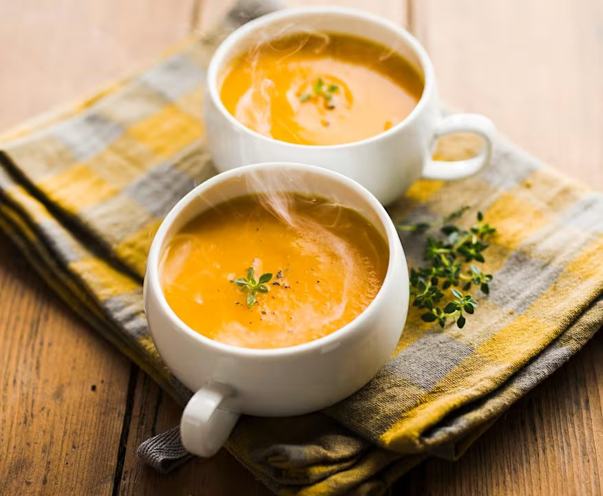

Soupe de légumes
Ingrédients
6×
- 80 g d'oignon
- 1 gousse d'ail
- 200 g de blancs de poireau
- 20 g de beurre
- 100 g de carotte
- 200 g de potiron
- 150 g de pommes de terre
- 800 g d'eau
- 0.5 c. à c. de sel
- 4 pincées de poivre

Préparation
Étape 1
Hacher 80 g d'oignon, 1 gousse d'ail et 200 g de blancs de poireau 5 sec/vitesse 5. Ajouter 20 g de beurre et rissoler 7 min/100ºC/vitesse 1.
Étape 2
Ajouter 100 g de carotte, 200 g de potiron, 150 g de pommes de terre, 800 g d'eau, 0.5 c. à c. de sel et 4 pincées de poivre. Cuire 20 min/100ºC/vitesse 1.
Étape 3
Mixer mode Mixage/1 min. Rectifier l’assaisonnement.
Résumé
80 g d'oignon
1 gousse d'ail
200 g de blancs de poireau
20 g de beurre
Hacher 5 sec/vitesse 5 rissoler 7 min/100ºC/vitesse 1
100 g de carotte
200 g de potiron
150 g de pommes de terre
800 g d'eau
0.5 c. à c. de sel
4 pincées de poivre
Cuire 20 min/100ºC/vitesse 1
Mixer mode Mixage/1 min